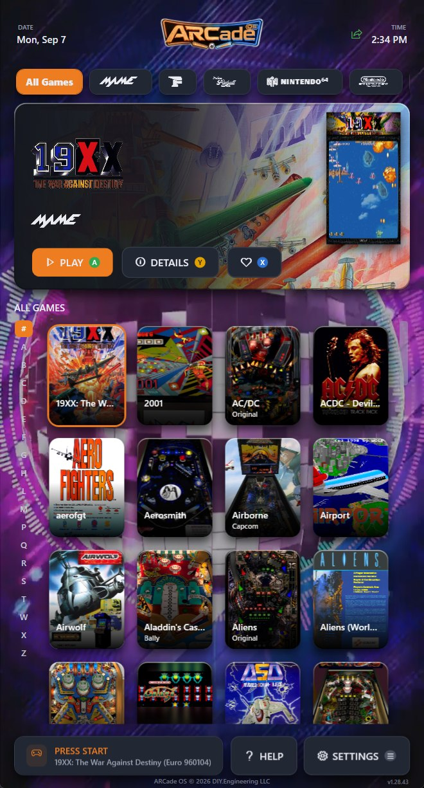
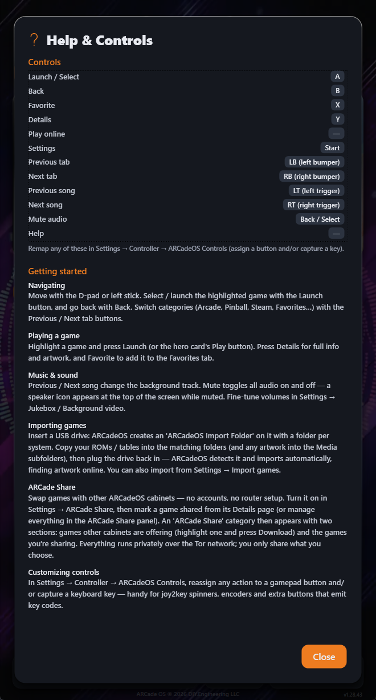
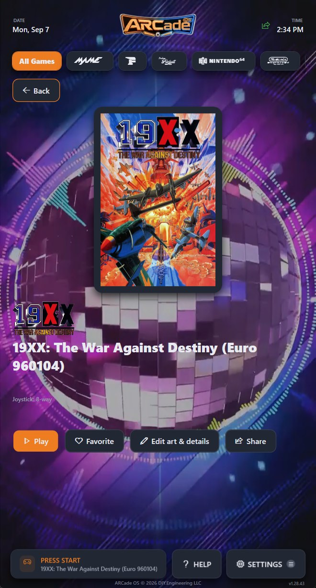
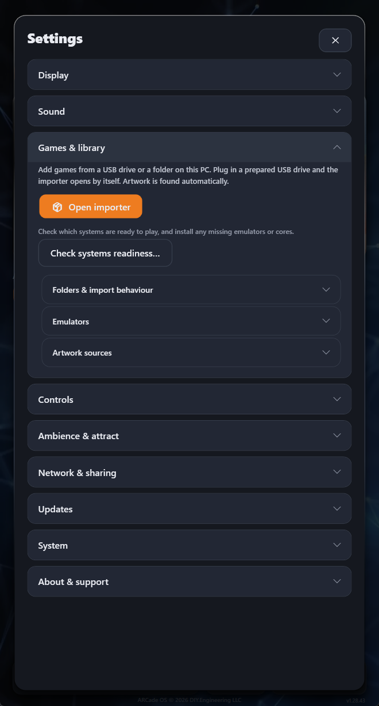
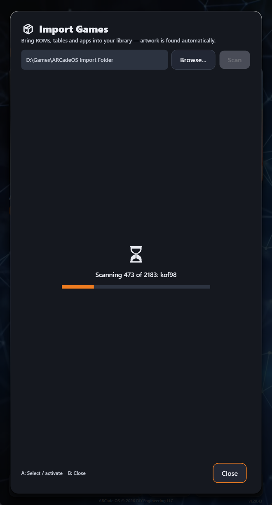
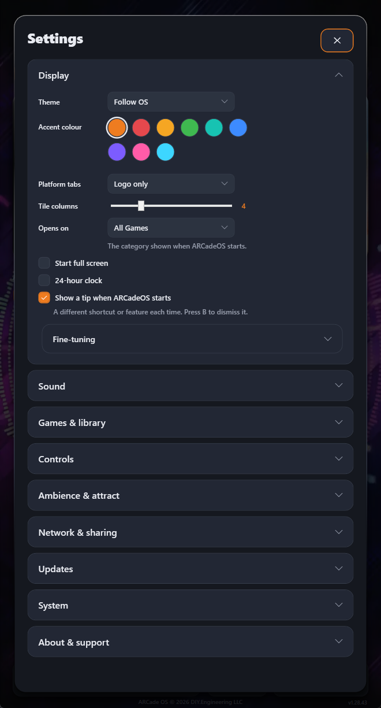
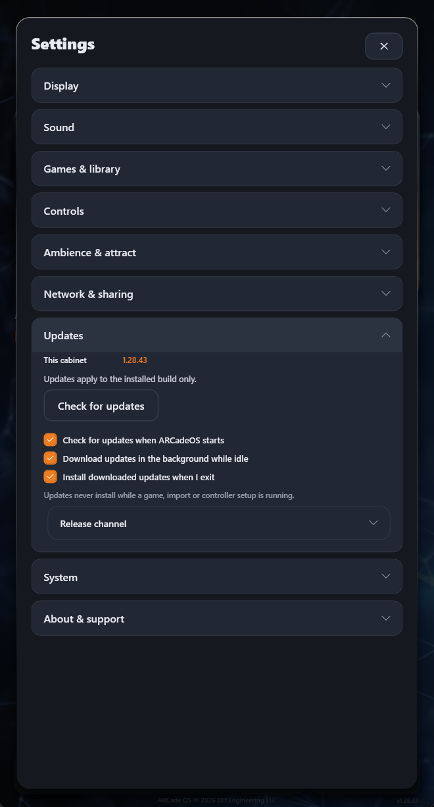
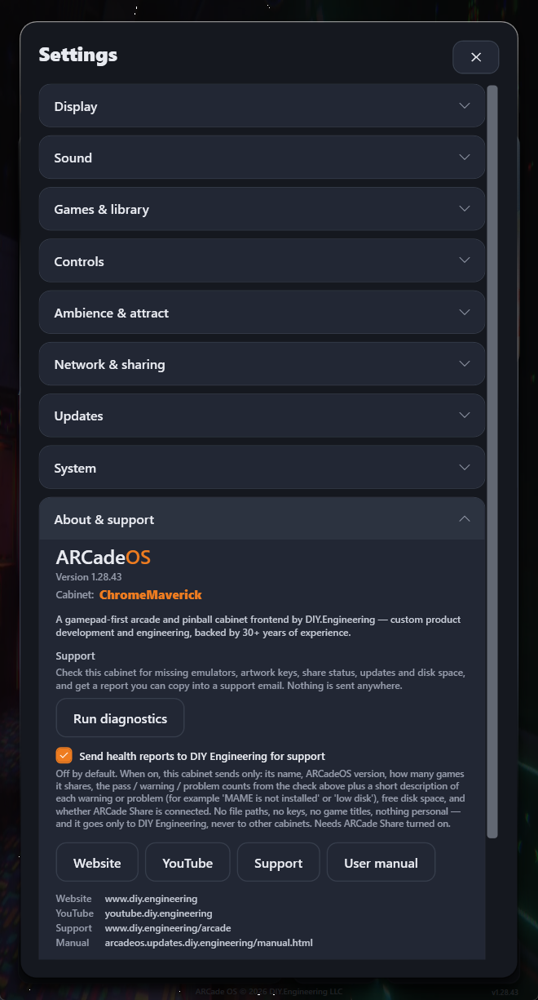

1Getting started
ARCadeOS is the operating system of the ARCade cabinet by DIY Engineering. It turns the cabinet into a single, gamepad-first machine: every arcade board, pinball table, console and PC game you own in one place, with artwork, attract video and music — and never a desktop in sight.
You do not need a keyboard or a mouse. Everything in this manual can be done from the joystick and buttons on the cabinet. Your cabinet arrives set up and ready to play, so if you just want to start a game, read section 2 and go.
The main screen
This is where you will spend most of your time. Everything is laid out around the game you have currently highlighted.

1 2 3 4 5 6 7 8- 1 Date, time and cabinet status
- 2 Category tabs (systems & collections)
- 3 Hero card — the highlighted game
- 4 Play, Details and Favourite actions
- 5 A–Z jump bar
- 6 The game grid
- 7 Press Start prompt
- 8 Help and Settings
First-time setup
The very first time a cabinet starts, a short setup wizard runs. It asks for a few things and then gets out of your way:
- A name for your cabinet. This is how other ARCade cabinets will see you if you ever turn on ARCade Share. It is revealed with a slot-machine spin — you can keep spinning until you get one you like.
- Where your games live, if you already have a collection to point it at.
- Whether to scan for games now.
You can change any of this later in Settings, and you can re-run the wizard from Settings → System.
A different tip appears each time ARCadeOS starts, highlighting a shortcut or feature you may not have found yet. Press B to dismiss it, or turn them off in Settings → Display.
2Your controls
Every screen in ARCadeOS is built for a joystick and buttons first. The same handful of controls works everywhere, including inside Settings.
Button reference
These are the defaults. Your cabinet’s buttons are labelled in the same way as an Xbox pad, because that is what the control panel presents itself as.
| Button | What it does | Keyboard |
|---|---|---|
| A | Launch / Select. Starts the highlighted game, or activates whatever is focused. | Enter |
| B | Back. Leaves the current screen, closes a card, or returns to the grid. | Esc |
| X | Favourite. Adds or removes the highlighted game from the Favourites tab. | F |
| Y | Details. Opens the game’s full information, artwork and play history. | I |
| Start | Settings. Opens Settings from anywhere. | S |
| Back / Select | Mute. Silences and un-silences everything instantly. A speaker icon shows while muted. | M |
| LB / RB | Previous / next category. Jumps between Arcade, Pinball, Steam, Favourites and the rest. | Q / E |
| LT / RT | Previous / next music track while you browse. | — |
| D-pad / stick | Move around the grid, the tabs, the A–Z bar and every menu. | Arrow keys |

Once you are inside a game, ARCadeOS steps aside. Hold the two exit buttons together to quit and come straight back to your library. Your cabinet’s exit combination is shown in Settings → Controls → Coin, Start & Exit.
Remapping
Any action can be moved to a different button. Go to Settings → Controls → Menu navigation, pick the action, and press the button you want. You can also capture a keyboard key for the same action, which is what you need for spinners, trackballs, encoders and extra panel buttons that send key codes rather than gamepad input.
3Browsing your library
Categories
The row of tabs across the top splits your library up. You will see a tab for each system you own games for — Arcade, pinball, the consoles, Steam and your external launchers — plus All Games, Favourites, Recent and Most Played.
Move between tabs with the shoulder buttons (LB and RB). This is much faster than walking the d-pad up to the tab row, and it works from anywhere in the grid.
Tabs can show a platform logo, a name, or both — your choice, in Settings → Display → Platform tabs.
The A–Z jump bar
The narrow strip of letters down the left edge is the fastest way through a large library. Push left from the first column of the grid to hop onto it, move up and down to a letter, then press right or A to drop back into the grid at that letter.
The bar only lists letters you actually have games for, so there are no dead stops.
Favourites & Recent
Press X on any game to favourite it — it appears immediately in the Favourites tab. Press X again to remove it.
Recent and Most Played build themselves as you play. You never have to curate them.
4Playing games
Launching and quitting
- Highlight a game in the grid.
- Press A, or move to the hero card and choose Play.
- ARCadeOS launches the right emulator with the right settings for that game. Nothing to configure.
- To come back, hold the two exit buttons together.
If a game cannot start because something is missing — an emulator, a core, a BIOS file — ARCadeOS tells you what is missing instead of failing silently, and can usually install it for you. See systems readiness.
The details screen
Press Y on any game for its full page: box art, logo, description, the year and developer, how many players it supports, and your own play history.

From here you can also:
- Edit art & details — replace the box art, logo, background or marquee for that game, or correct its title and description. Useful when an automatic artwork match picked the wrong regional release.
- Set the joystick type — 4-way or 8-way. On a cabinet fitted with the restrictor servo, ARCadeOS physically switches the joystick gate to match the game as it launches.
- Share the game with other cabinets (see section 6).
Music & sound
ARCadeOS plays background music while you browse and can play a video behind the grid. The triggers skip tracks; Back / Select mutes everything at once.
Every volume in the cabinet lives together in Settings → Sound — jukebox music, background video, launch video and interface sounds — so you can balance them in one place.
5Adding games
ARCadeOS finds artwork, descriptions and metadata for what you add, automatically. You supply the games; it does the presentation.
From a USB drive (the easy way)
- Plug any USB drive into the cabinet. ARCadeOS creates a folder on it called ARCadeOS Import Folder, with a subfolder for every system it supports.
- Take the drive to your computer and copy your games into the matching subfolders. If you have your own artwork, put it in the Media subfolders.
- Plug the drive back into the cabinet. The importer opens by itself and gets to work.
From a folder on the cabinet
Open Settings → Games & library → Open importer, then Browse… to a folder and press Scan. This is the route to use for a drive you have already copied games onto, or a network share.


Whichever route you use, ARCadeOS will:
- work out which system each file belongs to;
- skip anything already in your library, so re-scanning is always safe;
- look up box art, logos, marquees, descriptions and release details online;
- install the emulator or core that system needs, if it is not there yet.
Artwork comes from public databases. For the widest coverage you can add your own free API keys for RAWG and SteamGridDB in Settings → Games & library → Artwork sources — each has a Get a free key button that takes you straight to the sign-up page. This is optional; ARCadeOS finds most artwork without it.
Systems readiness
Settings → Games & library → Check systems readiness lists every system in your library and tells you whether it is ready to play or waiting on something — a missing emulator, a missing core, a missing BIOS. Anything it can fix, it fixes with one press.
7Settings
Settings is organised into nine sections, ordered by how often people actually use them. Everything you are likely to change is near the top; the specialist controls are tucked into collapsible panels inside each section, so the list stays short.
Open Settings with Start from anywhere. Move with the d-pad, open a section with A, and back out with B.

| Section | What lives there |
|---|---|
| Display | Theme and accent colour, how the platform tabs look, how many game tiles fit across, which category ARCadeOS opens on, full-screen start, 24-hour clock, and startup tips. |
| Sound | Every volume in the cabinet in one place — jukebox, background video, launch video and interface sounds. |
| Games & library | The importer, systems readiness, where your games live, emulator settings, and artwork sources. |
| Controls | Menu navigation mapping, the coin / start / exit buttons, per-system control overrides for arcade and pinball, and cabinet hardware such as the joystick restrictor servo and Stream Deck. |
| Ambience & attract | Background video, launch video, and attract mode — what the cabinet does when it has been left alone. |
| Network & sharing | ARCade Share and online multiplayer. |
| Updates | Automatic updates and the release channel. See section 8. |
| System | Backups, launch helpers, advanced options, and operator tools. |
| About & support | Your version and cabinet name, Run diagnostics, health reporting, and links to DIY Engineering. |
Settings → Display → Accent colour re-themes the entire frontend in one press — buttons, highlights, focus rings, the lot.
8Staying up to date
ARCadeOS updates itself. New features and fixes arrive quietly in the background over a secure, signed update feed, and there is nothing for you to download or install by hand.

Three switches control the whole thing, and all three are on by default:
- Check for updates when ARCadeOS starts
- Download updates in the background while idle — so the wait is already over by the time you are offered it
- Install downloaded updates when I exit
Choosing to install shows a real progress bar, measured against the actual download rather than a guess, and the cabinet restarts into the new version. You can also check whenever you like with Check for updates.
Updates never install while a game, an import or controller setup is running. The cabinet waits until you are done.
Your cabinet is on the stable channel, which is what you want. The other channels exist for DIY Engineering’s own testing.
Updates replace the ARCadeOS software only. Your games, artwork, favourites, play history and settings are untouched.
9Care & troubleshooting
Diagnostics & one-tap repair
Settings → About & support → Run diagnostics checks the whole cabinet: emulators, cores, BIOS files, artwork sources, ARCade Share, updates and free disk space. Each result is green, amber or red, with a plain-English explanation.

Most amber results can be fixed from the same screen with a single press — ARCadeOS will reinstall a missing emulator or core for you. If something needs a human, use Copy report or Save report: that produces a complete support packet you can paste into an email to us, from a cabinet we cannot reach.
Sending health reports
On the same screen you can opt in to Send health reports to DIY Engineering for support. It is off by default. When on, your cabinet periodically sends only: its name, ARCadeOS version, how many games it shares, the pass / warning / problem counts from the check above with a short description of each, free disk space, and whether ARCade Share is connected. No file paths, no keys, no game titles, nothing personal — and it goes only to DIY Engineering, never to other cabinets. It lets us spot a problem on your cabinet before you have to tell us about it.
Backups
Settings → System → Backup exports your settings, favourites, play history and artwork choices to a single file. Worth doing before any big change.
Common problems
| What you see | What to do |
|---|---|
| A game will not start | Run Check systems readiness (Settings → Games & library). It will name what is missing and usually install it for you. |
| A game has the wrong artwork | Open the game’s details, choose Edit art & details, and pick or replace any image. Common with games that had several regional releases. |
| New games did not appear | Re-run the importer on the folder. Scanning twice is harmless — anything already in your library is skipped. |
| No sound | Check you are not muted (press Back / Select; a speaker icon shows while muted), then the volumes in Settings → Sound. |
| ARCade Share says “Connecting…” |
Give it a couple of minutes on first use. If it stays there, your network may be blocking Tor — open Network blocking Tor? (bridges) in the ARCade Share panel and follow the steps there. |
| ARCade Share shows no other cabinets |
Normal unless another cabinet is switched on and sharing at the same time. Cabinets appear within a few minutes of coming online. |
| The cabinet feels sluggish | Run Run diagnostics and check free disk space — a nearly full drive is the usual cause. |
| Something else | Run diagnostics, use Copy report, and send it to support@diy.engineering. |
10Support & contact
Your ARCade cabinet is handcrafted by DIY Engineering in Winter Garden, Florida, and backed by a twelve-month warranty. If something is not right, talk to us.
Email support
Attach a diagnostics report if you can — it tells us almost everything we need.
DIY Engineering
Custom product development and engineering, backed by 30+ years of experience.
This manual
arcadeos.updates.diy.engineering/manual.html
Always the current version. Use Print / Save PDF for a paper copy.
All of these links are also on your cabinet, in Settings → About & support.
11Quick reference
Worth printing on its own and keeping near the cabinet.
| To do this | Press this |
|---|---|
| Start the highlighted game | A |
| Go back | B |
| Favourite a game | X |
| See a game’s details | Y |
| Open Settings | Start |
| Open Help | Help button on screen |
| Next / previous category | RB / LB |
| Next / previous music track | RT / LT |
| Mute everything | Back / Select |
| Jump to a letter | Push left from the first column, then up/down |
| Quit a running game | Hold both exit buttons |
| Add games | Plug in a USB drive, or Settings → Games & library |
| Fix a problem | Settings → About & support → Run diagnostics |